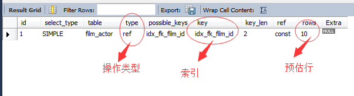
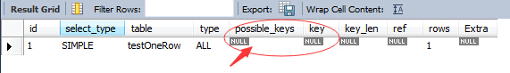
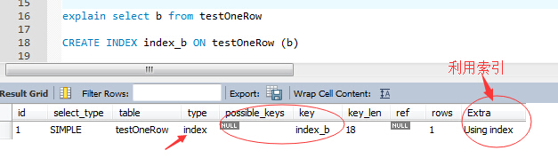

MySQL调优系列基础篇
1.技术准备
宿主于Window平台下，基于MYSQL5.6版本，利用自带的案例库（sakila）进行解析。
一、关于查询计划
其实，关于所有的关系型数据库中，在运行T-SQL语句的时候，在查询器进行编译运行的同时，都会有着自己的内部的一个优化过程，而这优化之后的产物就是：执行计划。
在SQL SERVER中，我们可以通过很多方式进行查看，方便与对查询语句的执行过程有一定的掌握，同样在MYSQL中，也有着自己的执行计划，相对于SQL Server，它的执行计划的查看方式如下：
EXPLAIN [EXTENDED] SELECT select_options
其实，很简单的一个查看方式，只需要将我们要关心优化的语句前面加上：EXPLAN关键字，MYSQL就会为我们评估当前语句要执行时需要关注的一些点。
类似于SQL SERVER的执行计划，但是可能没有SQL SERVER详细和直观，但是这不妨碍对语句的调优。
来个简单的例子：
EXPLAIN select * from sakila.film_actor where film_id= 1

简单的来分析下，上面输出表的内容项。
select_type：SELECT类型
<1>SIMPLE:简单的select(不适用UNION或子查询)
<2>PRIMARY:最外面的select
<3>UNION:UNION中的第二个或后面的SELECT语句
<4>DEPENDENT UNION:UNION中的第二个或后面的select语句，取决于外面的查询
<5>UNION RESUT:UNOION的结果
<6>SUBQUERY:子查询中的第一个SELECT
<7>DEPENDENT SUBQUERY：子查询中的第一个SELECT，取决于外面的查询
<8>DERIVED：导出表的SELECT(FROM子句的子查询)
table：查询的表名
type：连接类型
这里是影响查询效率的一个很关键的参考项，其中包含以下内容值，性能的好坏依次为:
system > const > eq_ref > ref > fulltext > ref_or_null > index_merge > unique_subquery > index_subquery > range > index > ALL
越靠前的访问类型，效率越高，速度越快，也是我们要优化的目标项。
一般来说，得保证查询至少达到range级别，最好能到REF,而最烂的就是最后一个ALL....这个在SQL SERVER中就类似于SCALE....全表扫描...
下面，我们依次来分析下这几个连接类型的应用场景：
<1>system:表仅有一行（=系统表）。这个一般是一个变量值，是const连接类型的一个特例。
<2>const:表最多的一个匹配行，它将查询开始被读取。因为仅有一行，在这行的列值可被优化器的剩余部分认为是常数。const用于用常数值比较primary key或unique索引的所有部分时。
<3>eq_ref：对于每个来自于前面的表的行组合，从该表中读取一行。这可能是最好的联接类型，除了const类型。它用在一个索引的所有部分被联接使用并且索引是UNIQUE或PRIMARY
KEY。eq_ref可以用于使用= 操作符比较的带索引的列。比较值可以为常量或一个使用在该表前面所读取的表的列的表达式。
<4>ref： 对于每个来自于前面的表的行组合，所有有匹配索引值的行将从这张表中读取。如果联接只使用键的最左边的前缀，或如果键不是UNIQUE或PRIMARY KEY（换句话说，如果联接不能基于关键字选择单个行的话），则使用ref。如果使用的键仅仅匹配少量行，该联接类型是不错的。ref可以用于使用=或& lt;=>操作符的带索引的列。
<5>ref_or_null：该联接类型如同ref，但是添加了MySQL可以专门搜索包含NULL值的行。在解决子查询中经常使用该联接类型的优化。
<6>index_merge：该联接类型表示使用了索引合并优化方法。在这种情况下，key列包含了使用的索引的清单，key_len包含了使用的索引的最长的关键元素。
<7>unique_subquery： 该类型替换了下面形式的IN子查询的ref：value IN (SELECT primary_key FROMsingle_table WHERE some_expr);unique_subquery是一个 索引查找函数，可以完全替换子查询，效率更高。
<8>index_subquery： 该联接类型类似于unique_subquery。可以替换IN子查询，但只适合下列形式的子查询中的非唯一索引：value IN SELECT key_column FROM single_table WHERE some_expr)
<9>range： 只检索给定范围的行，使用一个索引来选择行。key列显示使用了哪个索引。key_len包含所使用索引的最长关键元素。在该类型中ref列为NULL。 当使用=、<>、>、>=、<、<=、IS NULL、<=>、BETWEEN或者IN操作符，用常量比较关键字列时，可以使用range
<10>index：该联接类型与ALL相同，除了只有索引树被扫描。这通常比ALL快，因为索引文件通常比数据文件小。
<11>all：对于每个来自于先前的表的行组合，进行完整的表扫描。如果表是第一个没标记const的表，这通常不好，并且通常在它情况下很差。通常可以增加更多的索引而不要使用ALL，使得行能基于前面的表中的常数值或列值被检索出
possible_keys：指出MySQL能使用哪个索引在该表中找到行。注意，该列完全独立于EXPLAIN输出所示的表的次序。这意味着在possible_keys中的某些键实际上不能按生成的表次序使用。
key：key列显示MySQL实际决定使用的键（索引）。如果没有选择索引，键是NULL。要想强制MySQL使用或忽视possible_keys列中的索引，在查询中使用FORCE INDEX、USE INDEX或者IGNORE INDEX。
key_len：key_len列显示MySQL决定使用的键长度。如果键是NULL，则长度为NULL。注意通过key_len值我们可以确定MySQL将实际使用一个多部关键字的几个部分。
ref：ref列显示使用哪个列或常数与key一起从表中选择行。
rows：rows列显示MySQL认为它执行查询时必须检查的行数。
Extra：该列包含MySQL解决查询的详细信息。
<1>Distinct：MySQL发现第1个匹配行后，停止为当前的行组合搜索更多的行。
<2>Not exists：MySQL能够对查询进行LEFT JOIN优化，发现1个匹配LEFT JOIN标准的行后，不再为前面的的行组合在该表内检查更多的行。
<3>range checked for each record (index map: #)：MySQL没有发现好的可以使用的索引，但发现如果来自前面的表的列值已知，可能部分索引可以使用。对前面的表的每个行组合，MySQL 检查是否可以使用range或index_merge访问方法来索取行。
<4>Using filesort：MySQL需要额外的一次传递，以找出如何按排序顺序检索行。通过根据联接类型浏览所有行并为所有匹配WHERE子句的行保存排序关键字和行的指针来完成排序。然后关键字被排序，并按排序顺序检索行。
<5>Using index：从只使用索引树中的信息而不需要进一步搜索读取实际的行来检索表中的列信息。当查询只使用作为单一索引一部分的列时，可以使用该策略。
<6>Using temporary：为了解决查询，MySQL需要创建一个临时表来容纳结果。典型情况如查询包含可以按不同情况列出列的GROUP BY和ORDER BY子句时。
<7>Using where：WHERE子句用于限制哪一个行匹配下一个表或发送到客户。除非你专门从表中索取或检查所有行，如果Extra值不为Using where并且表联接类型为ALL或index，查询可能会有一些错误。
<8>Using sort_union(...), Using union(...), Using intersect(...)：这些函数说明如何为index_merge联接类型合并索引扫描。
<9>Using index for group-by：类似于访问表的Using index方式，Using index for group-by表示MySQL发现了一个索引，可以用来查询GROUP BY或DISTINCT查询的所有列，而不要额外搜索硬盘访问实际的表。并且，按最有效的方式使用索引，以便对于每个组，只读取少量索引条目。
我们知道，在数据量达到一定的程度之后，如果仅仅通过简单的表扫描来获取数据，那将是一个很好资源并且性能很烂的执行过程，而这过程当中一般的调优方案就是通过添加索引的方式进行，下面来一个简单的例子说明：
use test; #创建表 create table testOneRow(A int,b varchar(5)); #插入数据 insert into testOneRow values(1,'111')
我们简单的来执行一个脚本
explain select b from testOneRow

这里可以看到，只是单纯的通过表扫描（ALL）来获取数据，没有任何索引来优化查询。
下面我们来创建一个索引
CREATE INDEX index_b ON testOneRow (b)

大家，可以看到，这就是一个简单通过创建索引来优化T-SQL的例子。